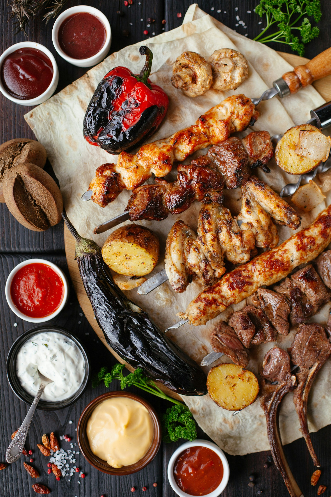
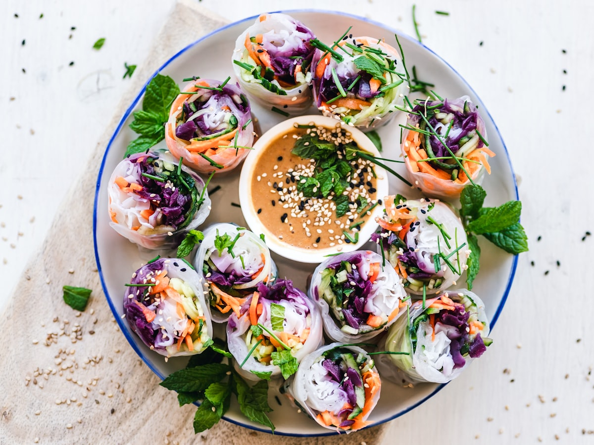
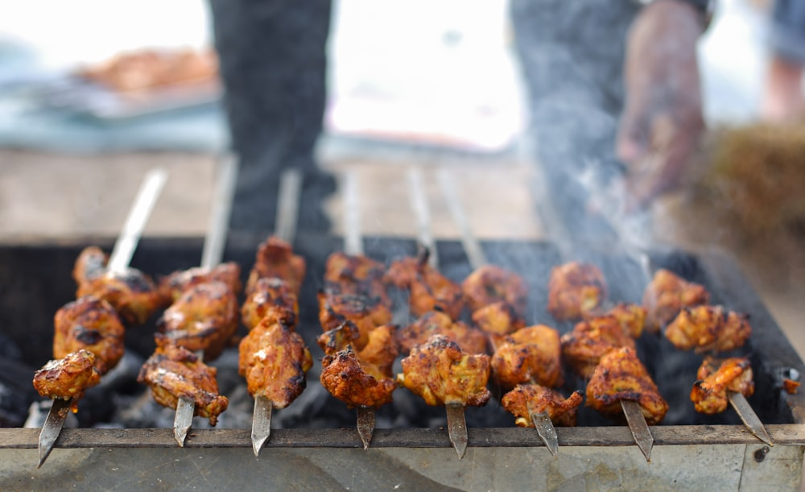
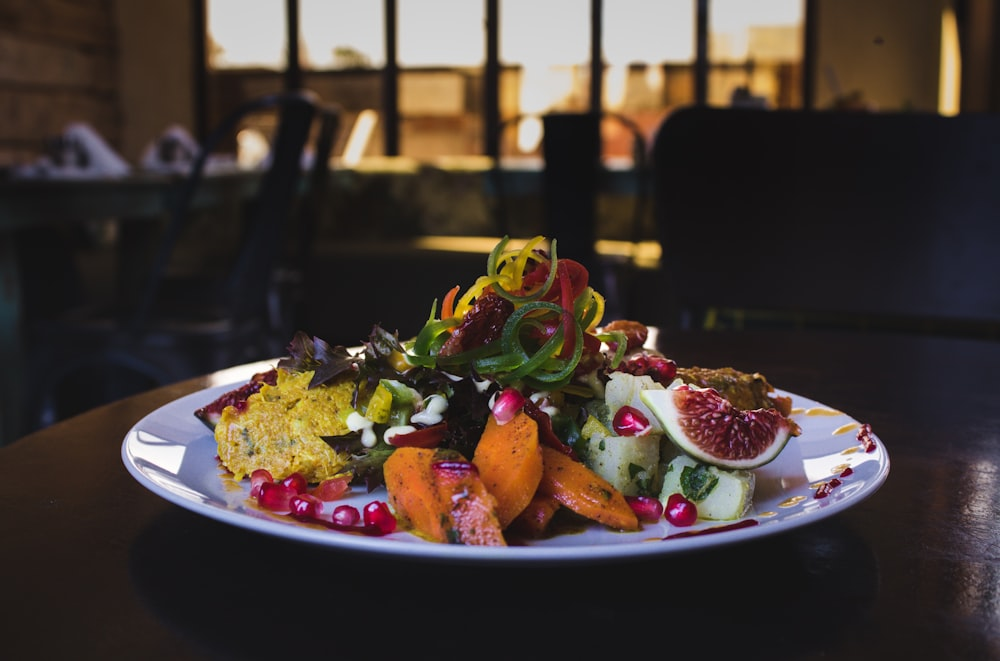
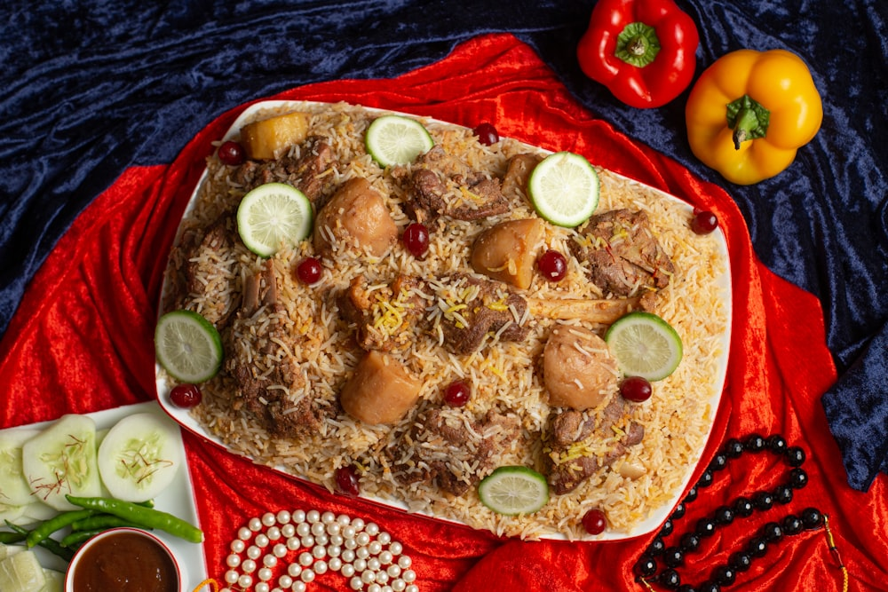
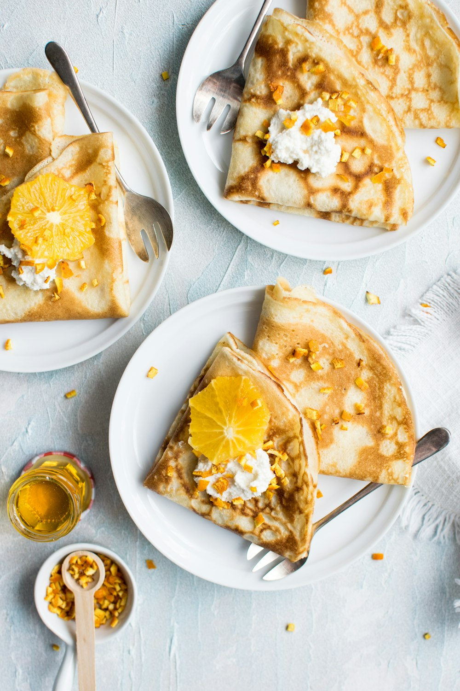

Irakisk & kurdisk kolgrill · Årsta, Stockholm
Hammurabi Restaurang
Eld, rök och tradition. Mört kött från kolgrillen, doftande saffransris, nybakat bröd och generösa mezze – mat lagad med hjärta, precis som hemma.
Om oss
Smaker från Mesopotamien – mitt i Årsta
Namnet Hammurabi för tankarna till det gamla Babylon och Mesopotamien – landet mellan floderna där matlagning länge varit en konst och en gästfrihet. Hos oss möts det irakiska och kurdiska köket över samma glödbädd: kött som grillas långsamt över kol tills det blir saftigt och mört, kryddat med omsorg och serverat utan snålhet.
Vi bakar vårt bröd färskt, kokar riset med saffran och rullar våra mezze för hand. Här är alla välkomna – familjen, vännerna och den som bara är hungrig. Slå dig ner, ta för dig och känn dig som hemma.
- Äkta kolgrill
- Färska råvaror
- Nybakat bröd
- Familjevänligt

Galleri
Lite av det vi serverar
Bilderna är exempel – byt gärna ut dem mot egna foton.






Öppettider
Välkommen in
- MåndagStängt
- Tisdag11.00–20.00
- Onsdag11.00–20.00
- Torsdag11.00–20.00
- Fredag11.00–20.00
- Lördag11.00–20.00
- Söndag11.00–20.00
Öppet alla dagar utom måndag. Köket stänger en stund innan stängning.
Hitta hit
Besök oss i Årsta
-
Adress
Sköntorpsvägen 84, 120 53 Årsta -
Telefon
072-003 55 55 -
E-post
info@hammurabirestaurang.se -
Öppet
Tis–sön 11.00–20.00 · Mån stängt